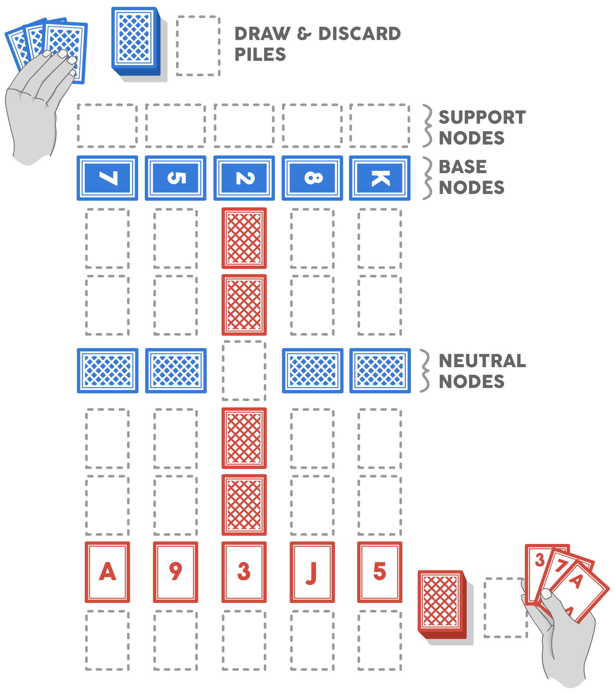
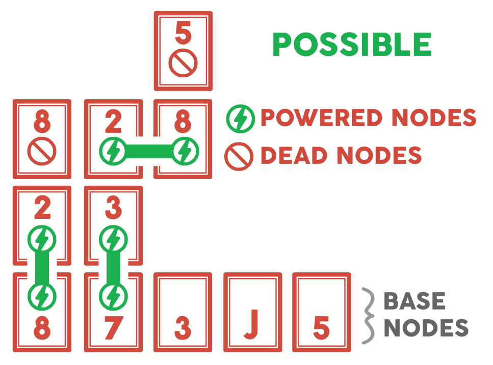

Rulebook v1.0
About the game
Crossfire is a territory control game that only requires two decks of standard poker cards and a table. The game involves two players starting at either end of the table making his way towards (and through) his opponent. There is a high level of strategy and tactics to obtain victory. A game session may take anywhere from 10 minutes to 45 minutes, depending on the aggressiveness of the players.
Two Player Crossfire
Setup
Each player has a standard 52 card deck plus 2 or 3 Jokers (each player should have equal Jokers). Make sure you can distinguish the two decks (i.e. decks of different color backs).
One player will play all of his cards vertically, while the other will play all of his cards horizontally. In this game, Player 1 is playing vertically, while Player 2 is playing horizontally.
- Shuffle each deck separately. Players will only ever draw from his own deck.
- The players should place the cards as shown in the image. It does not matter the order, as long as the cards are not rearranged once they are set down.
- If a player has 2 or less numbered (Ace through 10) base nodes or has a Joker as a base node, they are allowed (and strongly encouraged) to put all base nodes back in the deck, reshuffle and place down 5 new base nodes. They may repeat this step as many times as needed.
- To start the game, each player draws a card. Whoever draws higher, goes first (Ace being the lowest). If two cards of the same rank are drawn, draw again. Discard those cards.
- Both players draw 3 cards.
Turn Sequence
- The starting player (for example, Player 1) draws a card. On a player’s turn, he will always have 4 cards in hand. At the end of his turn, he will always have 3 cards in hand.
- Player 1 lays down one of his cards vertically (horizontally for Player 2) and face up. There are rules about how a player may lay down a card:
- A player may typically only play a card that is directly adjacent to (up, down, left, or right) another one of his powered cards (powered and dead cards are explained later).
- A player cannot play a card on top of another card unless he is attacking or defending that card, or he is building a tower (explained later).
- A player must play a card in the play area (the 5 x 9 grid shown above).
- If Player 1 does not lay down a card, he discards one of his cards. A player does not need to play a card, even if he is capable of doing so.
- It is Player 2’s turn.
Nodes
In Crossfire, cards are referred to as nodes. To continue towards the opponent, a player must have a chain of powered nodes. To seize control over an already placed node, a player must attack and win that node. The player wins the game when he seizes control of one of his opponent’s base nodes.
Powered Node
To continue forward, a player must create powered nodes. Powered nodes are two nodes that are adjacent to each other that sum to 10. A 10 is also a powered node without a pair.
Two powered nodes cannot share the same paired node; however, powering can be switched as needed by that player. A powered node must be linked back to a base node, or it has no power.
From a powered node:
- A player may lay down an adjacent node from his hand (dead node, or a 10)
- A player may attack or defend adjacent nodes

Dead Node
A dead node is any node that does not pair with another node to sum to 10 (excluding a 10), and any node that is not linked back to a base node.
From a dead node:
- A player can only lay down an adjacent node from his hand that would pair with the dead node to a power of 10 (thus making the dead node and recently laid node powered nodes)
- A player cannot attack or defend adjacent nodes from a dead node
Royals (Jack, Queen, or King) are dead nodes and cannot be powered.
Base Nodes
Each player has 5 base nodes: they are the starting 5 cards placed in front of them. Powered nodes must be linked to a base node to be powered, otherwise they are treated as dead nodes.
From a base node:
- A player may lay down a node from his hand that would pair with the base node to a power of 10. He must lay it in the spot immediately above that base node toward the enemy's base
- A player may attack or defend adjacent nodes
On his beginning turn, a player should place a node from his hand up from a base node (toward the enemy) to create a powered node chain. A base node of 10 is already powered. A base node of a royal (Jack, Queen, or King) cannot become a powered node.
Support Nodes
Below the line of base nodes, a player may place a support node. A support node must be a numbered node, it must be directly below a numbered base node, and the sum of the support node plus that base node cannot exceed 10. Once played, that base node may either be its original number, or the sum of its number plus the support node.
Attacking and Defending Nodes
When an opponent node is adjacent to a powered node of the player, the player may attack the opposing node. Attacking and defending is a contest of nodes’ strength. The strength of a node is determined by the rank of the card. Ace= 1, Jack = 11, Queen = 12, King = 13.
To attack a node, the player lays down one of his nodes from his hand on top of the opposing node (in the player’s given orientation: either vertically or horizontally). The node is now part of a contesting pile, as the attacker is contesting to seize that node. During this phase, the node continues to power as normal. It is now the opponent’s turn. If the opponent ignores the attack, on the player’s next turn, he will win the pile. The opponent may also defend the node by laying down a node from his hand of greater strength than the attacking node. The attacking player may then lay down another node of equal or greater strength than the defending node to contest again. This contest continues until one player does not play on the contesting pile for his turn, and the other player wins the pile.
Seized Pile
When a player wins a pile, it becomes a seized pile. A seized pile has no power, and nodes cannot be played off of the pile; however, the pile has a defense strength of the highest node strength in the pile (the top card). On his turn, a player who owns a seized pile has several options:
- He may have the seized pile remain until he decides to resolve it
- He may resolve the pile by removing all cards from the pile, and replacing them with one of the cards from his hand (as long as the player has an adjacent powered node)
- He may resolve the pile by removing all but one card (or a 10 and a royal if he is towering)
When a seized pile is resolved, the node that has replaced the pile acts as a powered node or dead node, as would normally be the case.
Neutral Nodes
The 8 face down cards on the play area are neutral nodes. A neutral node’s strength is determined by the hidden rank of the card. This node can be seized by either player. A player may “probe” a neutral node by attacking it. When a node is probed, reveal the card’s strength to both players. If the player wins the attack, treat the seized pile as normal. If the player loses the attack, flip the neutral node face down again, and keep the contesting pile on top of the neutral node. Either player may look at an already revealed neutral node whenever as a reminder of its strength.
If both players are contesting for a single neutral node, the player who ends the contest with the highest attack (and an attack higher than the neutral node’s strength), wins the contest.
Towers
Towering a royal is a good strategy for establishing a strong advantage point. To tower a seized pile, there must be at least a royal and a 10 within the pile. On his turn, the player who owns the seized pile may remove all cards other than a royal and the 10, which together form a tower. A tower has the power of a 10, but the strength of the towered royal.
Jokers
Jokers have separate properties in hand and in the play area:
- In the play area, a Joker can be used as a wild node. A Joker will be any single power number that is needed for that player to chain the nodes. However, anything can win a Joker’s defense, as the Joker’s strength is 0 (an attacking Joker can also win a defending Joker).
- In the player’s hand, a Joker can replace any single node that the player owns that isn’t in a seized pile, contested pile, or tower. To replace a node, the player replaces the node with the Joker; the player will still have 4 cards in his hand, and can therefore play another card that turn.
End Goal
To win the game, a player must win an attack on one of his opponent’s base nodes.
If a player runs out of cards to draw, the game is over and results in a tie.
Four Player Crossfire
There is a four player variation of this game that pits two teams against each other in a chaotic battlefield.
The same rules apply as in Crossfire, except a change in the play area and victory conditions. The play goes clockwise, starting with whoever draws the highest card.
Play Area
Team members sit across from each other and must work together to obtain victory. Team members must play from their own base nodes. When a node from one team member connects to a node from the other team member, each team member may play anywhere on the connected node chain.
End Goal
The first team with 6 victory points wins. There are several ways to obtain victory points:
- 1 point for every opponent base node seized.
- 2 points if a team has at least one connected node chain (a base node from each team member is somehow connected). Even if there is more than one connected node chain, only 2 points are awarded.
- 2 points for whichever team has control over the middle node.
When an opponent base node is seized, there is now an ally and opponent base node in the same base node line. The ally and opponent base nodes may not directly attack each other. If the opponent seizes control over his lost node, the ally team will lose their 1 point.
If a player depletes his draw pile, the team with the most amount of victory points wins (it is a tie if the amount is equal).
Crossfire Ultimate
There is an epic version of the four player game. The game can last anywhere from an hour to a few hours. It also requires a fairly large table, and 8 decks of cards (shuffle 2 decks together per person). We highly recommend this version for avid players.
The play area is massive (see below), but the rules are the same as the above four player version.